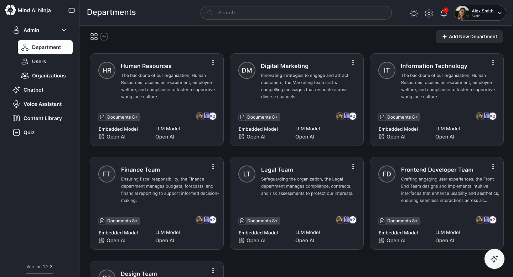

Every question started a treasure hunt
Company knowledge was spread across drives, wikis, inboxes and people's heads. Employees searched three or more places, then gave up and asked the same few experts.
Mind AI Ninja
Company knowledge was spread across drives, wikis, inboxes and a few busy experts. I designed Mind AI Ninja: an AI assistant that answers from each department's own documents, as text, tables or charts, while the owners keep it accurate.

Answers were scattered across tools, old documents kept circulating, and the same few experts were asked the same questions every day. Finding simple information often took longer than the work it was needed for.
Mind AI Ninja brings the company's documents into one secure place you can simply ask. It answers from the right department's knowledge, summarises documents, writes FAQs, and keeps a record of every conversation.
This is the story of how employees stopped hunting through drives, wikis and inboxes, and how the colleagues they kept interrupting got their days back. I designed the end-to-end experience: user flows, information architecture, wireframes, AI interaction patterns and the design system.
Company knowledge was spread across drives, wikis, inboxes and people's heads. Employees searched three or more places, then gave up and asked the same few experts.
People would only rely on an AI answer if they knew whose knowledge it came from, and if owners could control what went in.
Mind AI Ninja answers questions from each department's own documents, as text, tables or charts, while owners keep their knowledge current in one library.
Policies, contracts, project notes and reports live across shared drives, wikis, inboxes and people's heads. As a company grows, it knows more and more, yet finding the right answer gets slower.
Mind AI Ninja works like a good reception desk. You ask your question once, and it knows which department to ask, which document is current, and how to put the answer in plain words.
Files, drives, wikis and web pages each hold part of the answer, with no single place to search them all.
HR, finance, legal and engineering each own knowledge that other teams need all the time.
Experts spend hours answering repeat questions instead of doing their own work.
Public chatbots can't see internal documents, and shouldn't. Companies need AI that only uses their own content.
Rahul leads HR operations at a 2,000-person company. He owns more than a hundred policy documents, and answers over thirty questions a week that are already written down somewhere. Here's a typical Monday.
“How many days of leave can I carry over to next year?”
She finds three documents, each with a different answer.
He stops his own work to find the current version and reply.
One by email, one in the corridor.
An old PDF is still doing the rounds, and it gets used.
His day went on answering questions that were already written down.
An illustrative scenario, pieced together from what employees and knowledge owners described in research.
Mind AI Ninja serves three kinds of people: those who own knowledge, those who need it, and those who run the platform.
HR Operations Lead
IT services company · 2,000 employees
Half my day is answering questions that are already in a document somewhere.
Business Analyst · new joiner
Same company · 3 months in
I don't even know which team to ask — let alone which folder to look in.
IT Platform Administrator
Same company · IT team
I need to know exactly which data each model can see — and prove it.
Rahul is the primary persona; Meera and David are secondary.
The product needed two faces: a simple assistant for employees, and a clear control panel for the people who own and run the knowledge.
Employees had to dig through several tools, out-of-date documents and busy colleagues just to answer simple questions, and the whole company slowed down because of it.
The answer usually existed. It was just buried in the wrong folder, in an old version, or in the head of someone who was already too busy.
How might we give every employee one trusted place to ask anything about the company, answered from their own organisation's knowledge?
I wanted to know where people look first, which sources they trust, and how the owners of that knowledge keep it current. The goal was an assistant people would trust enough to ask first.
The same patterns came up on both sides, among those asking and those answering. Paraphrased from the interviews:
“I check three or four places before I give up and ask someone.”
“I can't tell an old document from the current one.”
“Honestly, the real search engine is Rahul.”
“If it's about numbers, show me a table or a chart, not a paragraph.”
“When I upload documents, I never know if they actually went in.”
“Nobody can check what's been asked or what was answered.”
Trust in an AI assistant comes from its sources. People need to know which department's knowledge an answer came from, and owners need to control what goes in.
I compared how companies already handle internal knowledge. Each approach covered storing it or searching it, but few gave a trusted answer drawn from the right team.
| Approach | Good at | What's missing | Verdict |
|---|---|---|---|
| Shared drives & wikisStorage | Storing knowledge. | Answers. Search returns documents, and nothing flags the out-of-date ones. | Partial |
| Company search toolsSearch | Searching across many sources at once. | The answer itself. You still have to read and interpret the results. | Partial |
| Public AI chatbotsPublic AI | Understanding and writing language. | Access to your own documents, and any control over who sees what. | Not scoped |
| Asking colleaguesPeople | Accurate answers with context. | Scale. Every answer costs an expert's time. | Bottleneck |
| Mind AI NinjaThis project | Department-scoped AI chat, voice and a content library over the company's own documents. | No guesswork. Every answer comes from known sources that admins control. | Opportunity |
Combine AI's way with words with each department's own documents, and give the owners control over both.
The core idea: knowledge belongs to departments, and every answer should be traceable to where it came from. Here's what we noticed, what we could have done, and what we chose.
We noticed: people trusted answers when they knew which team they came from. So each department gets its own admin, its own AI settings and its own document sources. Answers stay in scope, and owners stay accountable.
We noticed: real questions come in follow-ups. So the chat keeps a history of conversations and lets you pick which department you're asking, and follow-ups stay in context.
We noticed: for questions about numbers, paragraphs got in the way. So the assistant can answer with tables and charts, which can be copied or regenerated.
We noticed: admins uploaded documents and simply hoped they worked. So the library brings in files, web pages, Confluence and Google Drive, and shows each item's status (uploaded, in progress or failed) at a glance.
We noticed: nobody could check what had been asked or answered. So a voice assistant opens access beyond the keyboard, and every call is logged with a recording, a transcript and an analysis, letting teams review it later. Every screen comes in light and dark themes for long working sessions.
Keeping the employee side as simple as a chat, while giving admins real control over models, sources and access, without one side's complexity leaking into the other.
Mind AI Ninja brings AI chat, voice, a content library and department settings together in one place: simple for the people asking, and in control for the people answering.
“How many days of leave can I carry over?”
It's drawn from HR's own documents, not an old PDF.
The chat remembers the context and answers with a table.
Its status shows “uploaded”, so he knows it's live.
Then he gets back to his own work.
Employees ask questions in plain language, choose the department they're asking, and get answers as text, tables or charts. Their conversation history is always one click away.
Fixes“I check three or four places before I give up and ask someone.”
Admins add content from files, web pages, Confluence or Google Drive, and see each item's status, owner and size in one library.
Fixes“When I upload documents, I never know if they actually went in.”
Each department has its own admin, AI settings, connected sources and standing instructions, so answers stay accurate and ownership stays clear.
Fixes“I can't tell an old document from the current one.”
Voice calls are logged with recordings and transcripts. Documents get AI summaries, a read of their tone (sentiment), and auto-generated question sets.
Fixes“Nobody can check what's been asked or what was answered.”
Mind AI Ninja was built to change how much time people spend looking for answers, and how often experts get interrupted. These are the outcomes it was designed around.
The company's knowledge is now reachable through one place you can simply ask.
Employees get answers, summaries and FAQs directly, instead of hunting through documents.
A solid foundation, ready for future AI features as the company grows.
Remember Rahul? “Half my day is answering questions that are already in a document somewhere.” Now the document answers for itself.
Mind AI Ninja turned complicated company-knowledge work into something that feels like asking a helpful colleague. Pairing AI conversations with a clear dashboard for owners made information easier to reach, and left room for the product to grow.
Answers felt reliable once people could see which department's knowledge they came from.
The assistant is only as good as its content, so the owners' side deserved as much care as the chat.
Numbers deserve charts. Letting the format follow the question made AI answers far more useful.